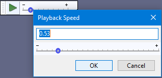

Play-at-Speed Toolbar
You can resize the toolbar, to get more precision.
You can change the speed of playback dynamically as you play audio, if you're not doing a looped play or a cut preview. Otherwise you set the setting before pressing play.

Play-at-Speed
Play-at-Speed Toolbar has its own Play-at-Speed button which plays (or restarts playback) at the speed set by the Play-at-Speed slider to the right. Playback can be paused and resumed at the adjusted speed using the Pause button  in Transport Toolbar or the shortcut P. Irrespective of the setting on the slider, using Space or the green Play button on Transport Toolbar will only play at normal speed.
in Transport Toolbar or the shortcut P. Irrespective of the setting on the slider, using Space or the green Play button on Transport Toolbar will only play at normal speed.
Precise setting of the playback speed
To set a precise playback speed, double-click over the slider (or create a keyboard shortcut for "Adjust playback speed"), enter the desired speed in the box and click OK.
- 
Setting the playback speed using the keyboard
You can control the Play-at-Speed slider with the keyboard. Right click the Play-at-Speed slider then you can use the keyboard left and right arrow keys to change speed by 0.05x increments. Note that this temporarily removes the normal use of these arrow keys to move the cursor position during playback - this is restored as soon as you make any audio selection or audio cursor positioning.
Loop Play-at-Speed
To Loop Play-at-Speed (play the track or selection over and over at adjusted speed until you stop), hold down Shift while clicking the Play-at-Speed button. This causes the button image to change to Loop Play  . The standard Shift + Space shortcut for Loop Play will only play at normal speed whatever the setting on the Play-at-Speed slider, but you can set a keyboard shortcut for "Loop Play at speed" in Keyboard Preferences.
. The standard Shift + Space shortcut for Loop Play will only play at normal speed whatever the setting on the Play-at-Speed slider, but you can set a keyboard shortcut for "Loop Play at speed" in Keyboard Preferences.
Play Cut Preview-at-Speed
To Play Cut Preview-at-Speed (play audio either side of a selection at adjusted speed to preview what deleting the selection will sound like), hold down Ctrl while clicking the Play-at-Speed button (this works on Mac too, but using ⌘ while clicking does not). This causes the button image to change to Play Cut Preview  (like the green Play button but with a vertical cut through it). The standard C shortcut for Play Cut Preview will only play at normal speed whatever the setting on the Play-at-Speed slider, but you can set a keyboard shortcut for "Play Cut Preview at speed" in Keyboard Preferences.
(like the green Play button but with a vertical cut through it). The standard C shortcut for Play Cut Preview will only play at normal speed whatever the setting on the Play-at-Speed slider, but you can set a keyboard shortcut for "Play Cut Preview at speed" in Keyboard Preferences.
Shortcuts
There are no default shortcut for the various Play-at-Speed functionality, however you can set a custom keyboard shortcuts for: Play-at-Speed, Loop Play-at-Speed and Play Cut Preview-at-Speed.
You can also set keyboard shortcuts for Decrease playback speed and Increase playback speed. Each press of those shortcuts decreases or increases speed respectively by 0.03x increments. }}